Pino, projects and pain
Blog
Introduction
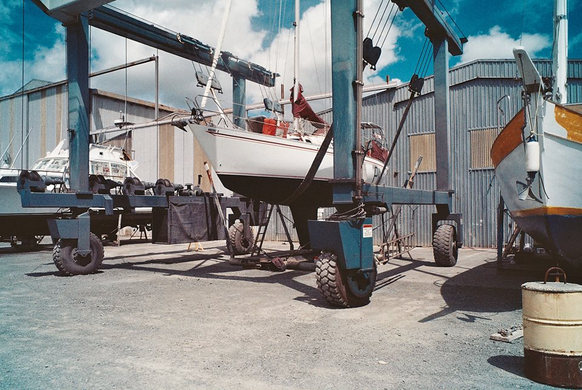We arrived in New Zealand with a long, scary list of things to fix, or replace on Pino: New batteries, new mainsail, bottom-paint, galley plumbing, replace intermediates and backstay, replace top hatch, replace windows, replace control cables... etc, etc...
If we can't finish all of these projects then we can't leave, that was the deal. There is too much ocean between us and Japan, our vessel needs to be made safe to endure it and to ensure our safe passage.
We had grand ideas about what we thought we could do, of doing everything ourselves - to learn, but also to save money.
Below, is a detailed account of all the repairs and changes we did on Pino, and of the difficulties that came with it. This is a technical post, interspersed with bits of story, present and past. For those who don't know the terms, but that are interested I'll do my best to explain them all throughout the text.
Batteries
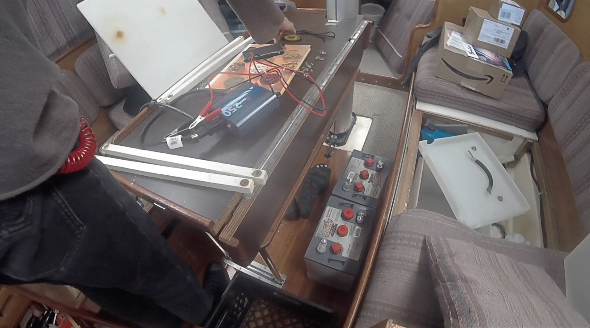About a month after we arrived, our batteries went flat in the night. Completely dead. We heard the inverter beeping, complaining it didn't have enough power to function.
That woke us up.
We were expecting this. The batteries were not performing so well these days, or even in the last year. There were times when we had to start the portable generator to get the engine going, especially early in the mornings when the power from the solar hadn't kicked in yet. Not just this, once we did have the engine on, for a while we had no more alternator belts and so no way to charge the batteries with it. An alternator is used to charge the boat batteries with the engine. Our alternator is too big for our engine (previous owner upgraded it) and if we run the engine too hard with the alternator on, the belt breaks. We broke 3 in one month. We were in French Polynesia at the time, and could find no replacements where we were (we did find some eventually in Rarotonga).
After our batteries died in Whangarei, we went to Snow brothers, a car battery store, to ask if they had four 6-volt batteries in stock - they did. Except the batteries were a bright red colour, with a big American flag on the front tag - the golf-cart batteries of patriots.
We went for the same battery setup as before, we'd need more power than this but don't have the space for it. We opted for lead acid again (the cheaper sort), they work fine, but we'd prefer something more eco-friendly, and with a longer lifespan.
We bought the batteries, and Snow Brothers offered to deliver them at the marina, and to pick up our old ones to dispose of - great! Back on Pino, we unhooked all the cables, and lifted the batteries from their restraining boxes. The batteries were bloated, the sides had a curve to them. Yep. These batteries were done, sulphated, and beyond help.
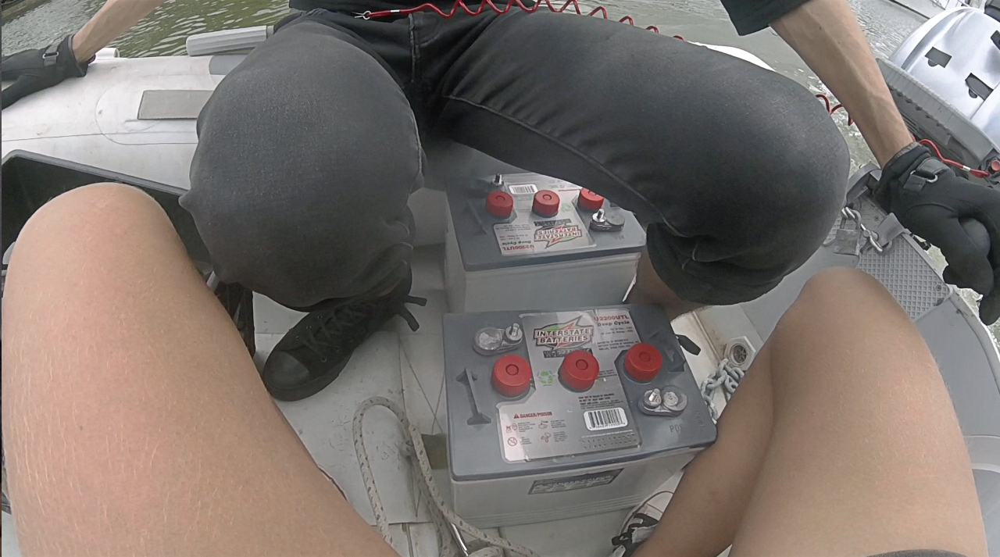We put one in an old milk crate we had, and lowered it into the dinghy - with much care - and did the same for the other ones, carrying two at a time. Iggy has a soft floor, wasn't up to carrying more than that at once I don't think.
They took our dead batteries, and we returned the new ones to the boat, again, in teams of two. One of the Snow Brothers employees gave us a handle, so we could move them with ease, this helped a lot to get them back onboard. We hooked them up, and Pino was sentient again.
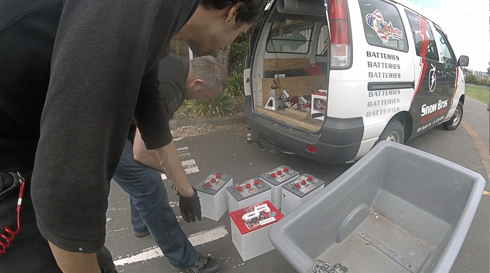Takeaway: Don't forget to water your wet batteries, we didn't do this so often in the beginning (knowing nothing about boats or batteries). They'll last a lot longer than ours that way.
Batteries 810$
Total 810$
Solar panels
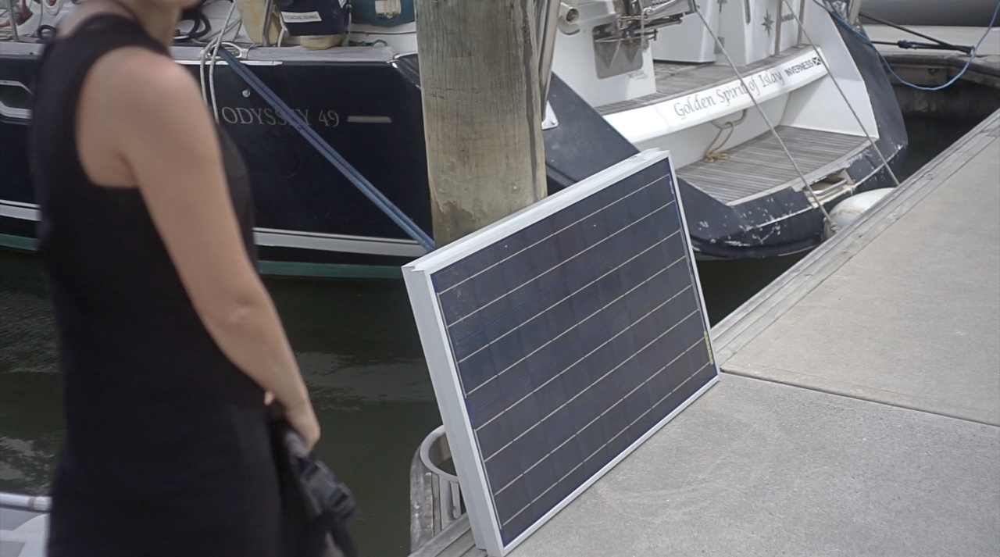I noticed one morning an ad on the marina's bulletin board, concerning a set of two 90W panels for sale, for 150$. We knew we wouldn't get a better deal than this, and so we went to get them.
The owner was upgrading to bigger panels, because boats nowadays require more power, to keep up with power-hungry electronics. How else can you power two fridges, a microwave and your ice crusher? The solution is MORE power. We get the hand-me-downs - it's how most people our age get boats.
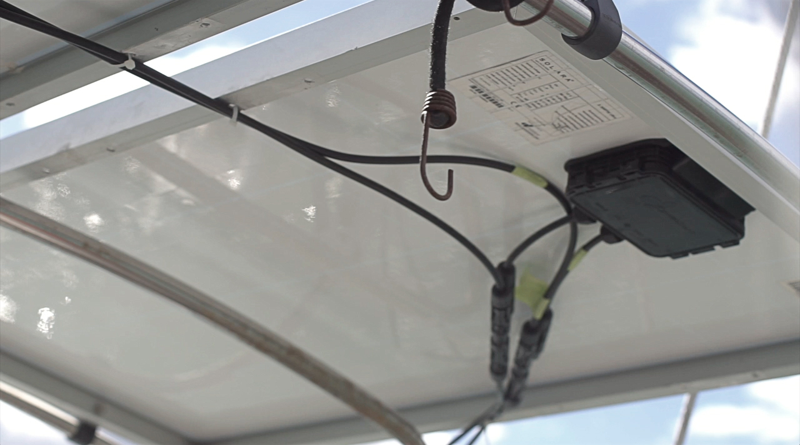We removed the 60W panel we had on the forward deck of the boat, it was too exposed to spray, a bad idea overall. We didn't install this panel again since we had no place for it. We moved the 100W from the bimini top (the open front canvas top over the cockpit, supported by a metal frame) to the dodger (the spray hood above the cabin), and the two 90's on the bimini rack. Now, instead of 160W, we had 280W.
Takeaway: Don't install panels too low on your boat, or somewhere waves can wash over them. Also, if you're going to install panels over the cockpit have a proper arch made (if you don't already have one). We recently removed the two panels from the bimini rack, because it wasn't made for that, and we feared it would collapse under strain (wind 40kts+). As of now, we only have the 100W on the dodger, and with a 90W set up on the aft-most seat under the tiller, the other 90W is inside when we're underway and we put it out on deck when we're at anchor. The panels we bought are too big and too heavy for our boat, it was a good deal and it helped power Pino for 1 year, but for offshore passages it's just not ideal. Having an arch built is possible, but Pino is a light race boat, and adding more windage and weight will reduce performance. SO, as of now, we're undecided.
Solar panels 150$
Total 960$
Windows and haul out
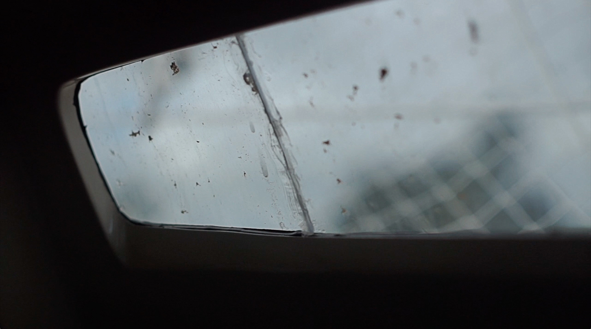One of the scarier projects on our list was to replace our windows, Pino has 3, on each side, they have a lot of surface and a bit of a bend to them. We had to do this right, to avoid redos or potential leaks. People warned/lectured us about this, it has to be done right. Whenever we mentioned to someone we were re-doing our windows, they almost always gave us their opinion, and what they thought was the best way to do it. Suddenly, everyone's an expert. Can't say how many times we've had people tell us what to do, this, without us ever asking it of them. All boats are different, not everything that has worked for them will for work for us.
When came time to start this dreaded project, our first decision was to cut the aft-most window of the boat in two, the longest of the three, with part of it overlapping a fibreglass backing. Our old windows both cracked in that place. The boat twists as you sail, and with heat or cold, the acrylic contracts and expands, the sealant helps to cushion the motion.
Another big change, was to make the windows thicker, from 6mm to 8mm acrylic. Our thinking was that added thickness too, would aid in them not breaking as easily. I cannot yet vouch for the quality of that decision, as we have not traveled with them long enough to ensure it was the best idea. More updates on that to come.
We intended to buy sheets of material, to then cut it ourselves but lacking the space, and the tools - as well as time - we decided to have the windows cut to size with Seamac. We visited the shop, and the quote Bonnie, one of the owners, gave us for the material and cutting was good enough, so we went ahead with it. (Unfortunately the price did go up considerably, more on that ahead.)
We had no real technique for removing the window. It's a shitty job, that involves cutting the silicone sealant with a long blade, then, to prise the window from the seal with a lever (we had a wood knife. Not ideal), while cutting through the silicone with the blade as we went along. I read somewhere, that using a wallpaper scraper works well, as a lever. Don't use a wood knife, or a screwdriver, don't be like us. Oh, and be gentle, SO, so gentle.
Don't let your anger for this window grind you down, do it slow, do it well.
Our lack of gentle-ness, resulted in the window cracking in many more places. Our windows have a LOT of sealant - there is no outer frame or screws for support, just the gooey stuff. The part of the window overlapping the fibreglass backing gave us the most trouble: a 25x30cm area, thick with black stuff, jamming a knife through that was tough, didn't have a blade that long or that strong to pierce it all the way through.
Removing them took many hours, laid over many days, the weather was rarely on our side, and so we decided to only remove the starboard side windows, and to use these as a template for both sides - this too, turned out to be a mistake. The windows may look the same, but they are not. They are very much, asymmetrical. We didn't want to remove both sides at once, because it was raining a whole lot, and because we live and work in the boat and wanted to be comfortable.
I had tarps taped up on the starboard side, to cover up the windows at night against both rain and insects. If we'd removed both sides at once, I think we would have had a hard time living in Pino, especially since the work took at least 3 weeks, this, including the time it would take for Seamac to cut the windows - they were very, very busy at the time.
Once we had the windows off, we taped up the broken pieces together, and brought them over to Seamac, already then, well aware that they wouldn't be able to use them as templates. They would have to re-draw new ones, adding to the production time and cost (and so begins the long line of added costs). We only have ourselves to blame for this, because we had little help and few resources, and because we're learning.
The windows had need of a black primer, applied to a band on the inside of the window, on the part that would be in contact with the sealant and the fibreglass. While protecting the silicone from the sun, it also makes for a nicer, cleaner finish. They did this step for us too. Seamac also applied a protective film to the surface of the acrylic, in two layers (leaving one to protect the inside part of the window, to be removed last). The quote was 350$ initially, but in the end, it cost us about 1100$, for the material, cutting, black primer, 13 tubes of silicone sealant and templating.
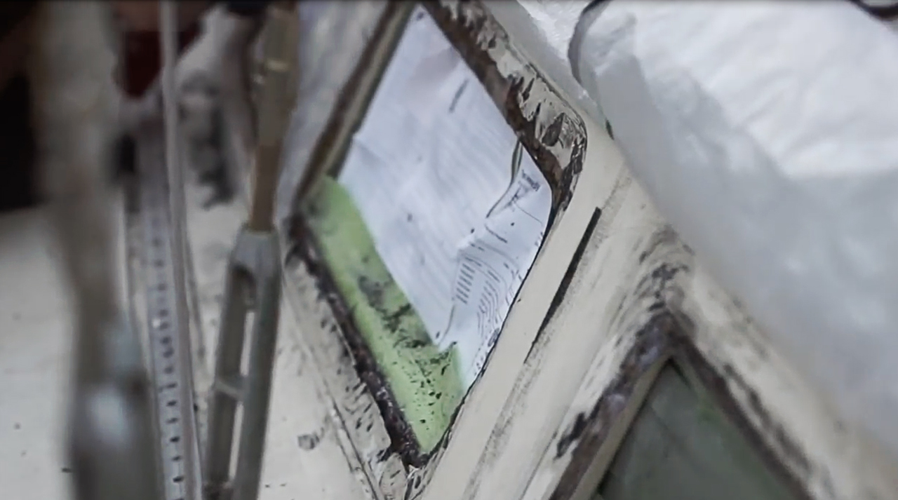In hindsight, we should have sought help for removing the windows, we wouldn't have required templates if we'd done it right, which would have reduced the costs significantly. We did have help for the second half of the project though, having a mentor helped us do it right.
While waiting for the acrylic to be ready, we scraped all of that black stuff off. It took ages to do it. We had razor-blade scrapers to take off the rough bits, then we sanded the edges by hand, and then borrowed someone's sander to smooth it off, while helping to create a rough surface for the sealant to adhere to. Once the surface was devoid of black stuff, many long hours and days later, we cleaned it with isopropyl alcohol. While giving the surface a good clean, it doesn't leave it wet, it evaporates quickly which is essential for bonding.
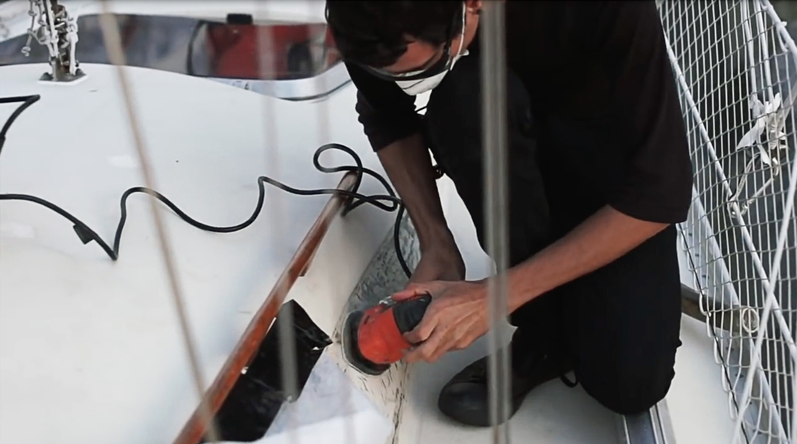It took a lot of time for our windows to be finished, and this coincided with our haul-out at Dockland 5.
Pino needs a bath, real bad.
Take away: In doubt when doing a difficult project, seek help from others, don't hesitate to do that, it'll save you time and trouble down the line. Pick your weather, be patient and don't rush it, if you do it right you'll only need to do it once (until comes time to do it again, but that should be many more years later).
Haul out
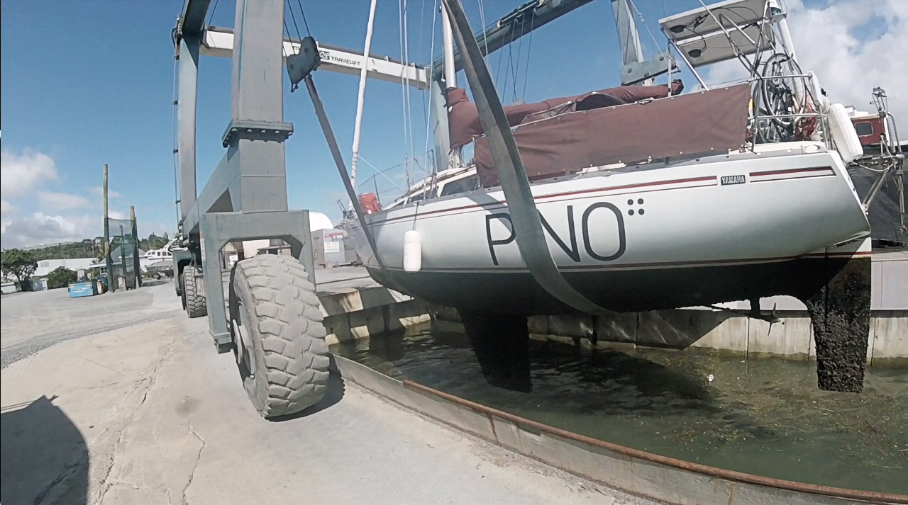I feared this moment, of seeing what the hull was like after spending a few months in the Town Basin. Our bottom paint was old, and staying in these hot brackish waters probably didn't help. We'd heard New Zealand waters were... nutritious - I had no idea just how much.
The day that we scheduled our haul out, was also the day when tropical storm Gita passed near New Zealand. Northland was safe, but we got a lot of the wind and rain. We motored off of the pile mooring with ease, our prop wasn't fouled - good. I had nightmares about us not being able to move, the prop heavy with ocean stuffs, with us losing control and drifting onto other boats, then onto the canopy bridge with the concrete grinding into our mast. Prior to leaving, people had told us stories of boats not being able to move because of all the shit caked under their boats.
Pino skidded on the water well enough, and we made it to Dockland5. We did have some difficulty steering the boat onto the slings, given the weather. The wind screamed into our rigging.
Upon seeing Pino out of the water, we gasped. Pino's belly was full of brown clammy bits, forming a thick shell, a disgusting crust of sea things.
Pino, better known now as 'The Flying Dutchman', at least, on its underside. Any moment now, a human-like shape, a clam for a head, would detach itself from the hull and go on a walkabout while chanting.
- "Part of the crew, part of the ship!"
All of that crusty brown stuff came off with the help of a pressure hose, but also with it, came big sheets of paint - whoops, old paint is old.
We had some rain on that first day, as the tropical storm passed on through, but luckily, this did not last. We stayed in the yard for 8 days, and most were sunny, permitting us to redo the bottom without any need to wait for weather. We borrowed a vacuum sander from Cowley's, a hire shop for tools and other heavy equipment. Cowleys was some walk away and the vacuum was heavy, it had wheels, but the road leading back to the yard had no sidewalk and part of the walk was on a narrow bridge. Someone from the store agreed to drive us there, good, don't think the vacuum would have survived the trip otherwise.
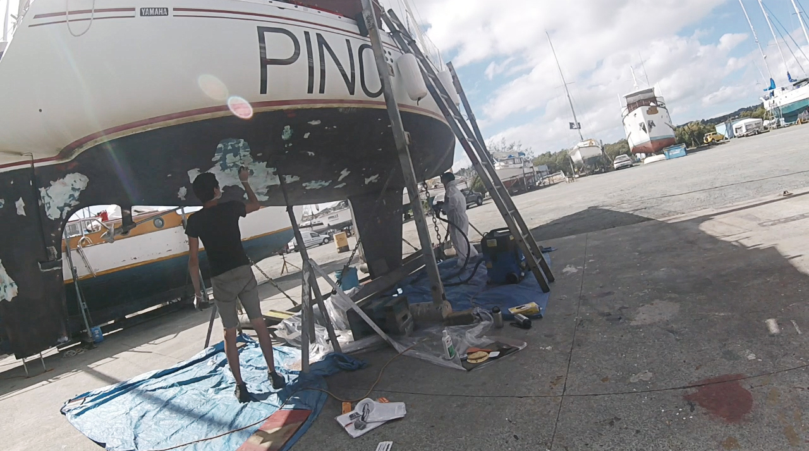Back over on Pino, we laid sheets around and began to vacuum sand. This was our second ever haul out, second time doing bottom paint. The first time, we wet-sanded by hand - a long and back-breaking process. Wet sanding wasn't permitted here, because boatyard doesn't have separate drains for toxic paints. The only spot, is where they do the pressure wash near the ramp.
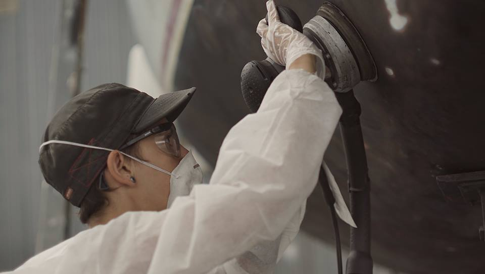Sanding took us about 2 days, light till dark. Because Pino's belly had spots without paint - a lot of the old stuff had cracked off - we decided to apply a primer first. Putting anti-fouling paint on gel coat (what protects the fibreglass underneath) directly is unadvisable. Anti-fouling paint is what you cover the bottom of your boat with, to slow the growth and/or facilitate detachment of marine organisms, like barnacles, or algea. If you didn't have this, you'd have to wash your boat very, very often, otherwise you'll get a nice marine garden under there. We used an ablative paint, which means that the paint comes off over time. Usually, adding 3 coats of paint is enough.
After a few layers of primer, and when dry, came time to apply the anti-foul paint. We bought one big can of black Carboline antifoul, one can was enough to do 3 coats.

Drying time can be long between coats, we took this time to do other jobs on the boat, like, replacing the plumbing for the galley (our boat kitchen) sink. In Canada, and all the way to Mexico, we were using our salt water pump in the galley, and unfortunately, in warmer waters, it caused the inside of the sink drains to corrode. We had to replace those, but removing the drains meant disconnecting the pipes below, which in turn revealed some pretty nasty stuff.
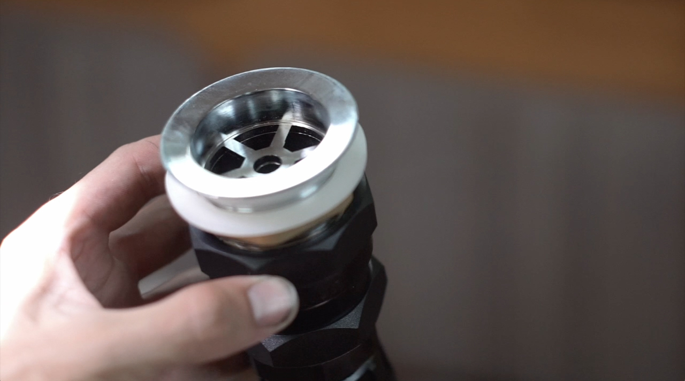The pipes were clogged, and old - overall disgusting. So. What started as a drain-replacing project, turned into a galley sink overhaul. We spent much time at Mitre10, laying pipes out on the floor, to find the right-sized elbows and tubes.
- "Okay. Drain head, goes to lock joint, which goes to tube, upsized to a another, bigger joint, to a another tube, to an elbow, to another tube..."
We had a nice puzzle thing going on, an exploded view of our future sink setup. Employees in the store stood around us, helping us find the correct parts.
Passing pliable pipes through floors and narrow gaps is always tough. We taped the end of the pipe to the new one and pulled, hoping it wouldn't come apart in the process. Do it slow, so slow, otherwise you're FUCKED. Being gentle and patient is a common tactic when it comes to boat projects.
We also replaced the galley faucet. The boat had a pressure faucet before, but we didn't use it, because we prefer to use the foot pump - more economical you see. Every press is a 1/4 cup of water. We removed the pressure faucet, as well as the old foot pump faucet that came through inside the sink (which had also begun to leak). We installed our new faucet head between the two sinks, in the place of the old one, and plugged up the hole the foot pump faucet left behind. We opted for a simple model, because the more extravagant, heavy duty one with a pumping handle didn't fit in that space vertically - shame.
When that project was over, came time for another bottom coat. We interspersed waiting times with other projects, which made our days quite long. We always went to bed exhausted. Our boat was still windowless then, and messy from other ongoing fixes, it was tough to really do anything other than boat stuff. Our laptops were put away, orphaned, and confused.
Pino looked amazing with a fresh bottom and with a clean waterline, we cleaned up some oxidation stains with some Grunt- that stuff works wonders.
We also cleaned the prop thoroughly, it had lost some of its shine, not just this, we discovered then that we had to grease the thing. It hadn't been greased in some time. Being new to boats, there are some things that people won't think to tell you, and that we, won't ever think to ask. Although while cleaning it, I did notice a place with a bolt, with the word 'grease'. Um. Odd, I thought. Grease - Grease what?
- "The prop obviously. How did we miss this?" Devine said
- "Because the prop has never been this clean?"
- "Merde."
- "Kinda like that time we found out that we had to water our batteries. Yea. Kinda like that."
We've made plenty of mistakes in the past, and aren't done still, that's what happens when you step out of your comfort zone and into the unknown.
Now that we knew we had to grease it, it was time to find out how. We were going to consult the internet hive-mind, but before we could our neighbour came round to help us out. He lent us the gun, and the little nib, required to pump grease into the prop without taking it apart. Thank you neighbour!
Later, we read this: "Props should be greased once a year."
Yiiiiikes- we are terrible at this stuff. The prop seemed fine, we are lucky, and wont fail to do this step in the future.
Then, came time to coat the prop and shaft with prop speed, a paint that inhibits growth, in hopes that it wont foul as quickly in the future - something quite necessary, we realized, in NZ waters.
Near the end of our stay in the yard, the 'yard master' was kind enough to let Pino sit in the slings for a day, so we could paint the underside of the keel (the long fin underneath the boat, that gives it righting ability) - at no extra charge! We'd be put back into the water sometime the next day.
Unfortunately, then, they dropped us off with our nose pointing inward. We have a hard time driving out backwards, especially in a place like this, surrounded with shallows, with current and lots and lots of wind at our beam. We ended up doing a full 360, coming all too near to the shallows, under the watching eyes of the people at the yard and others on their boats on hardstand. You can be sure that there will always be an audience there watching when you fuck up.
No sailor is beyond making mistakes though, that couple that watched us maneuver clumsily at the yard, also had docking problems coming in. Devine helped them out. No one's perfect - something to remember.
Back on our pile mooring in the Town Basin, we finally received our windows and the package of many, many, tubes of Fixsil FS200 silicone (black gooey stuff). Our windows are not fixed mechanically, all that is holding them in is the black stuff. Some other Yamahas do add bolts, but found that more often than not, these leak, because as I've said, the material twists, expands and contracts. Fixsil FS200 is a high-strength 100% silicone adhesive, it's UV and salt water resistant.
An essential part of adding windows without mechanical fixings, is to add spacers, at a size that matches your window's width, height and thickness. The sealant's technical spec sheet should be able to tell you the thickness required, all are different. The spacers we had were little rubbery bits, that we cut to size, and that we glued to the fibreglass with contact glue. We had planned to fibreglass over them, but decided against it in the end.
The spacers, we placed all around the area where the window would go, so that when we'd apply the sealant, and the window on top, that it would end up resting on the spacers and not push out too much glue while keeping it levelled at even thickness all around. We also added spacers under the window to hold it up, to know exactly where it would go when came time to put it on. Our windows are large and heavy, and the bottom spacers kept breaking off, so we ended up adding SS nails instead.
Devine & I then put the windows in place, without sealant, laying against the spacers, to see if it would hold and to mark the areas where we'd have to put tape. The tape ensures the sealant is applied cleanly. I made sure to add enough distance at the top of the window, to ensure the seal would have a good angle. If there is no angle in the seal at the top edge of the window, moisture will accumulate- we don't want that. I also added tape around the windows, from inside the boat as well as a 'bib' under each window, to catch any drippings, if any.
We also prepared some bits of wood, that we'd lay outside of the windows to add pressure, a way of making sure that the acrylic stays in place.
We had bits of bamboo, and our dinghy oars, with one end covered with foam - as to not damage the window - and the other end would be wedged into the toe rail. The sealant we bought, did say that we would have no need of any mechanical fixings to add pressure, that the sealant would be enough, but we preferred to do it all to ensure a good adhesion.
A hard thing about this project, was to wait for the proper weather window to start. The weather needs to be very, very dry, if there's any bit of moisture, it can reduce the adhesive properties of the sealant. This is difficult because it rains a lot in Whangarei, the town lies in a depression, between mountains, making it very rain-prone.
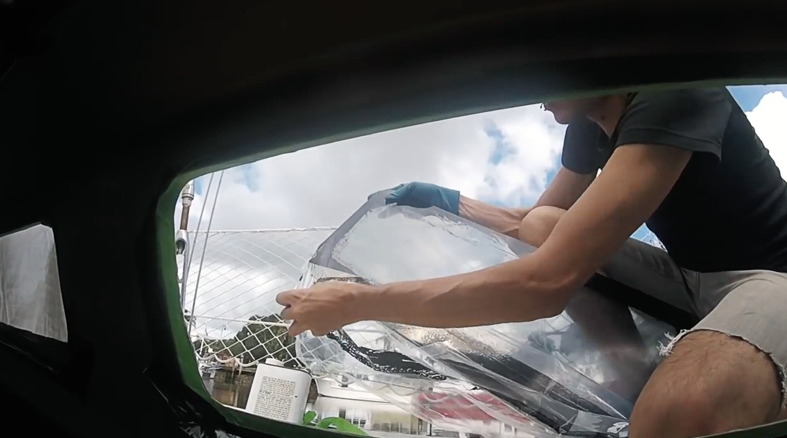Once we did find a day to start, came another problem, the acrylic windows had a thin plastic protective film over them, as i've said before. We removed the outer film, and with it, came the primer- FUCK! The primer was sticking to the film. We called Seamac to ask about this, they said it shouldn't do that, but it did. So we made the best of it. Before putting the windows on, we'd dip our finger in the black stuff and rub it over the parts of the window that had lost bits of primer. From an aesthetic point of view, it would help, although we could see a slight difference in blackness. It's really not a big deal, but when you've planned out every step to perfection, it sucks to have this happen. While no other will notice, this defect is very visible to us.
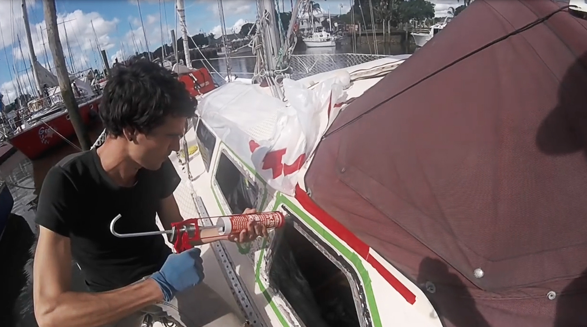No matter. We pushed on. Jim, our window mentor from the sailboat Bright Moments, came to help us apply the first window, he'd done this sort of work before and came at our request. His advice turned out to be extremely valuable, we couldn't have done it without him.
We cleaned the surface one last time with isopropyl alcohol, then, came time to open the first tube of sealant. We cut a 'V' shape at the end of the plastic nozzle with a blade, matching the thickness of the spacers, and began to apply it to the fibreglass. Then, we ran over the gooey stuff with a flat tool to spread it well. In hindsight, we should have used a spread tool with little wide teeth, to create gaps, this too would help both sides to stick to each other. I went inside, while Jim and Devine were outside, and put the window in. I had tools at the ready, to 'tool' the sealant around the window, to produce a clean and even finish. I had lots of paper towels around, and trash bags to dispose of them. This was a dirty job, and with the sealant drying quickly, we couldn't waste time cleaning tools or worrying about it staining things in the boat.
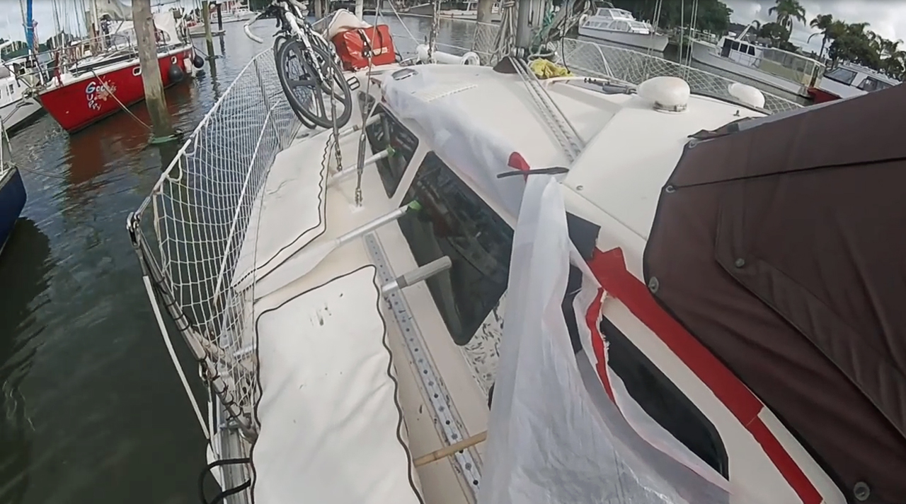Devine and Jim pushed onto the window from outside, pushing it flat against the spacers, with the bottom laying over the nails. It was thusly, perfectly positioned, with the black stuff oozing out of all sides. They then began to tool the area around the windows, removing the excess, and adding more sealant if any was missing anywhere. We kept a little bowl with a mix of water and dishwashing liquid near, you can use a finger to clean up the sealant, dipping it in the bowl of soapy water will stop the gooey black stuff from sticking to it. Inside, I too, was removing the excess, and adding more sealant as needed. Once we'd removed the excess sealant, and that all was clean, and to our liking, we each removed the protective plastic from the acrylic. We couldn't wait too long to do this, because if the sealant dries it'll start coming out in 'strings' and may damage all of our beautiful work.
We removed the film, and then the protective tape, and voila! Window number one was in! We applied mechanical fastenings, pushing the bits of bamboo onto the windows, and then turned to the second, and third window, repeating the same thing. These, we did alone, it's dirty work and Jim helped us enough! THANK YOU JIM :)!
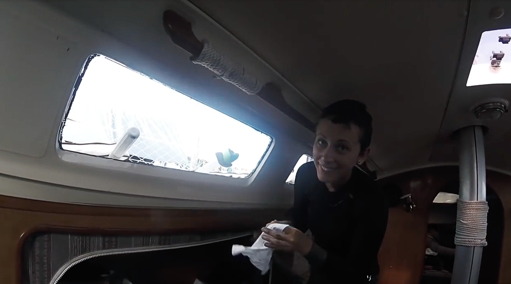We set plastic tarps back over all windows, to protect them from the weather and the sun, as directed by the sealant's information sheet. We left them covered for a few days. Pino had windows...! We, and the elements, were separate again.
We repeated all of it for the port side windows, although, as I mentioned earlier, we made the mistake of using the same templates for both sides of the boat. Don't do that. Boats are very much asymmetrical, we found that out. The windows fit, that wasn't the problem, but the primer around the windows was not perfectly aligned to the fibreglass, which means the plastic film was tough to remove inside at times, and that one of the windows has some primer visible from inside. Not a big deal though, we can scratch that off easily. Not the worse mistake we've made. Still, not all windows are the same, something to remember for the future.
We also realized then, that our front starboard side window, wasn't a real window at all. It's laid onto a full fibreglass backing. How did we miss this? We laughed. They put a window there to make the design of the boat symmetrical, because the port side opened onto the head. If there had been a window on the starboard side, it would have opened onto a dark closet.
Takeaway: People will tell you how you should do things, that's okay, but when everyone starts to do it it can be a bit dizzying, and you might make a wrong decision. If you trust you've done your research, stick with it, you'll do well, just don't skip any steps. Always wait for weather, don't try and finish things too quickly. Ask for help, we asked Jim because we knew he had just redone his windows recently, and because the techniques he used were the same as ours.
Ask questions when and if you can, a lot, about everything, especially in your newbies like us. Mistakes cost money, and when it comes to marine gear, that means a LOT.
Also, when doing antifoul, get a good mask. We were running on little money at the time, but should have picked up those masks with the replacement filters. The mask I was wearing keeps some of the dust, but none of the harmful fumes at bay. Also protect your skin, when removing antifoul, I bought a cheap suit which did help.
Window cost 1300$
Plumbing cost 100$
Haul out Cost 430$
Anti-fouling 250$
Prop-speed 200$
Total 3240$
Hatch

Now that this project of fear was over, another came to replace it.
We wanted to replace our top hatch, which was really just as thick piece of acrylic fastened by SS fittings, and that closed onto a rubber seal. That seal, was beyond done, dried up and crusty by sun and salt. The rubber seal was not protected from the sunlight at all, it's a poor design if you're sailing in warm and sunny places.
During our transit to NZ, sea water came in past the crusty seal while I was asleep, a wave splashed over the bow, and slipped inside, sending a torrent of wetness where I was sleeping. The sleeping bag, and the cushions were wet. I remember grabbing a cushion then, and shoving it in the 27x27cm hole and keeping it wedged up there with layers, upon layers of duct tape. This wasn't the best solution. In my defence, I was half asleep, kind of dazed, and grabbed whatever I could find in the dark. It was funny to find the next day though, a cushion thick with salt water and compressed into a tiny space bound by infinite amounts of tape.
We thought this top hatch setup wasn't ideal, also the big piece of acrylic had many cracks in it and was near dying. We bought a small GEBO hatch from Seamac to replace it with.
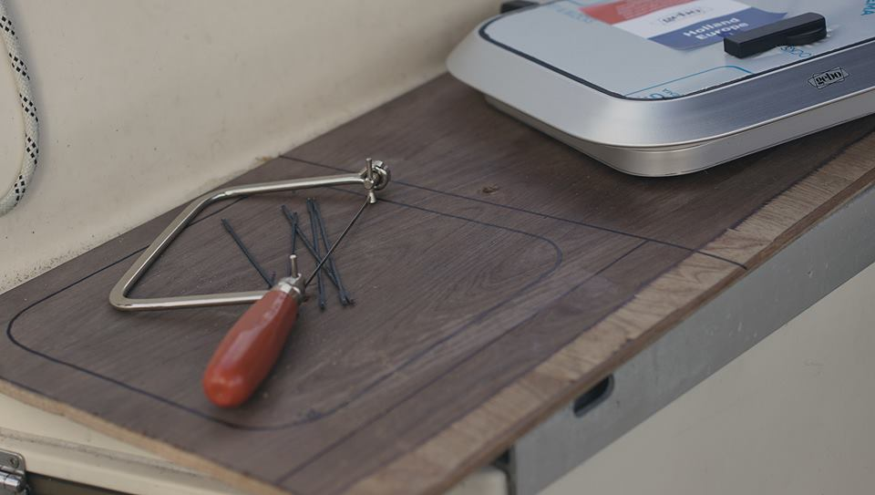Again, this proved most difficult. The window was too small for the existing hole, so we had to cut a platform out of wood, the outer edge matching the outside part of the hole, we would have to cut a hole in it, sized for the new hatch. We didn't have access to a workshop, and the wood was very, very dense. We used a handsaw to cut it, and it took AGES, many hours of sawing interspersed with bouts of whining and thoughts of dying of old age with this piece of wood, still uncut.
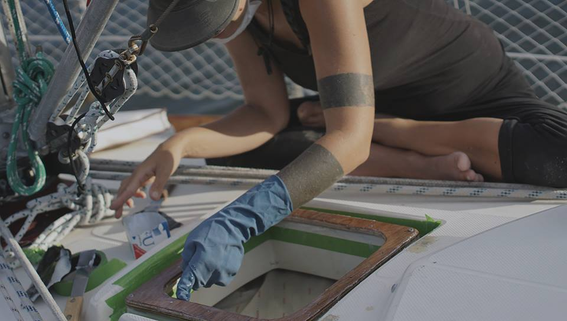We drilled some holes into the fibreglass, marked holes in the wood and drilled those too, then placed the wooden frame onto the hole, and screwed it into place. Then, we epoxied the shit out of that frame, making it one with the existing body of the boat. We epoxied, waited, sanded, epoxied again, waited, sanded... till it was nice and smooth.

We painted the entire frame, to a colour approximating that of our boat, except that it had a subtle yellow tint. We also epoxied and painted the area inside the cabin, making for a smooth transition.
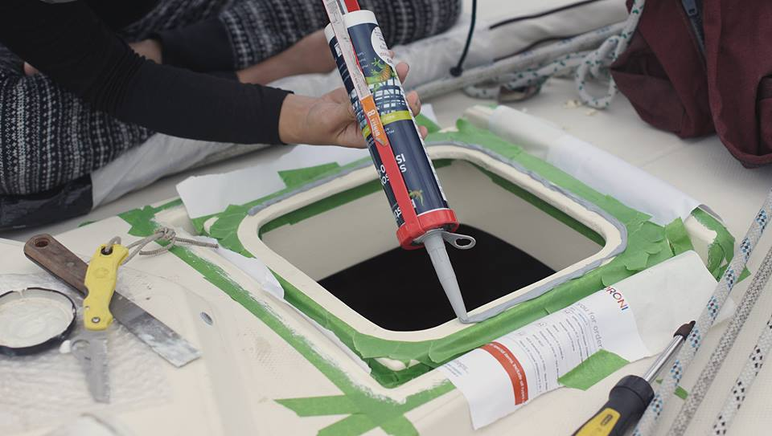Then, we marked up holes onto our shiny, and yellowy, new base where the window was going to go, and drilled into it. We scuffed the surface lightly, then added some spacers, with contact glue. Once dry, we applied a sealant, grey stuff, that ensures aluminum to fibreglass adhesion. Then, we pressed the window onto it, and put the screws in. We added more sealant around the edges, tooling it in for a clean finish, soapy water at hand, and did the same inside.
Hatch project was done.

Takeaway: Maybe, if you can, install the window at a slant, so the water won't collect on it. The surface should be flat and even, but a slant would make it better we feel.
Hatch 300$
Total 3540$
Tiller
A tiller, for those who don't know, is a steering alternative to a wheel. Instead of a circular wheel, you have a bar, usually made of wood, that is attached to a rudder post, which in turn, is attached to the rudder (a sort of long and thin rectangular flap). If you move the tiller to the left, the rudder moves to the right, and so with this you direct the water one way and then another. Driving with a tiller, gives you a more direct connection to the rudder. Devine & I like to use the fixie analogy, with fixed-wheel bikes you have less components between the pedals and the wheels, it's the same with a tiller and rudder.
A project we were supposed to do while in Mexico, that was then only realized a year later.
The wheel, that we used to steer the boat, is kept there by a big post that is bolted through the deck. Removing the wheel, means you have to remove what is supporting it, and all of the connections leading inside the boat, steering SS cables that lead to a big quadrant (a metal wheel that is attached to the rudder post). A turn of the wheel, pulls on one of the cables, which turns the quadrant and the rudder.
Removing the wheel pedestal, Devine said to me, was easy enough. Devine had to cut through the control cables (when we have the engine running, it's what controls the engine speed), because we couldn't remove some SS screws that had merged with a piece of aluminium (happens, SS and aluminium will corrode over time) - no matter, the control cables had to be replace too anyway. The cockpit now had a large gaping hole in the floor. I went below and removed the wires connected to the quadrant (that big metal wheel attached to the rudder post), cutting away at them with a hacksaw in the dark, in a tiny cramped space. We taped up the underside of the holes, and filled them up from the top with epoxy. Just in time too, because the rain in Whangarei always comes.

We had a tiller for Pino already, that we'd bought at the same time as the wind vane at a scrapyard in Sonoma CA. The tiller head fit with ours well enough, but ideally, we'd have to make a new one so that the tiller can be made to go lower, currently, it stands quite high, but it doesn't really change much for driving.
Switching from wheel to tiller, meant we had to install both a new throttle lever, and compass. Both of these things were part of the pedestal with the wheel before.
We replaced our old control cables too, which had split and rusted in part, and bought new and longer ones. We routed them to their new place on the port side, in front of the aft locker. Peeking at the place we would have to install the throttle from inside boat, after opening the wall up, we discovered there wasn't enough room to install it there. There wasn't enough height for the cables to bend at a good angle, if the angle is too extreme it can damage them overtime.
We decided then, to install it on the starboard side, access was easier, we could get at it from inside a locker.
The two-lever throttle we bought, although very shiny, turned out to be a great big piece of junk. It came with no installation guide, bore no name, no way to find information about it online. We made a hole for it, and installed it, but the lever was super wobbly, we couldn't imagine going to sea with this.
We returned it to All Marine, saying just this, that it was a giant piece of crap, which they confirmed, and they let us exchange it for another, more expensive, and better model. I guess they knew it was shit? Why keep it in stock then?
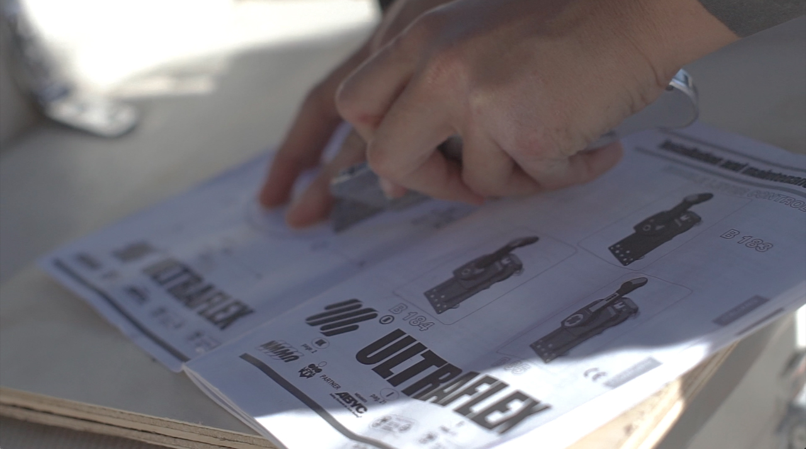We bought a single-lever throttle, a Ultraflex B85 side mount. The issue now though, was that we'd already made a big hole, and this one needed an even bigger hole. We were able to drill a good hole, a bit offset, that lined with the outer edge of the old one. Doing this wasn't easy, every project requires a different sized hole, and buying a new bit is expensive, and kind of ridiculous - how often will we be making holes this size in our boat? Not too often I hope. We found a used tools shop in Whangarei up Walton street, and were able to borrow a proper sized bit there - yea, borrow, they suggested it. We installed the throttle lever, and its backing, and routed the acceleration cables through Pino's insides and over to the engine room, with much swearing and difficulty.

Pino could go forward again! YAY. I did make a mistake though, of not securing one of the two control cables on the engine well enough, the effect was that as soon as the engine was on, we'd go forward. The cable came off as we were going forward, and stayed stuck in that position. When we set the anchor, we usually rev the engine to go back to make sure its set, if we tried to go backward we'd go forward instead, but didn't notice it the first time, blaming it on the wind or current in the bay where we happened to be.
It's not really a big deal, it was windy out, and that alone helped to set our anchor. We fixed it after the second time we tried to anchor, clearly noticing then, that we were moving forward even if the throttle was pointing backward, even in neutral. It was just a matter of reconnecting the cables, and to ensure that the bolts were tight.
We still had more holes to make after this, for our compass, on the port side bulkhead (a dividing wall or barrier between separate compartments inside a ship) on the cabin front. We ordered one online, a small white Ritchie bulkhead compass.
The bit we had before was too big, we returned it to the used tool places, our boat neighbour had a few, but not exactly the right size. We borrowed one, that was very, very near our desired diameter, and figured we could sand the rest.
That turned into a 2-hour long sanding game, sand sand sand, try the compass, nope, sand sand sand. We did fit it eventually, and connected it inside. We realized then that the damned thing didn't come with an LED, we'd looked at so many models, and forgot to make sure it came with it.
During this time, our old pedestal lay on deck, we didn't know what to do with it. We considered selling it, but couldn't be bothered, we had little energy at this point. We decided to bring it to Stanley Marine, a used boat gear shop. Devine had an idea, and asked if we could exchange the pedestal and wheel, for an old 15kg Rocna we'd seen lying around the back. The owner didn't mind this, so we left Pino's old wheel there, and returned with a heavier anchor! Score!
Takeaway: Don't cheap out on important boat parts, the throttle lever we saw initially looked good at first glance, but was shit. Spending more will not always guarantee quality, but in this case it did. The tiller we bought in Sonoma, is for a boat that has a tiller-post hole that is low on deck, it has a curved shaped, and it sized for a bigger boat than ours - we didn't realize this at the time. It still fits, and works well, but if you change your boat from wheel to tiller, mind the shape of the tiller as well as the tiller-head shape.
Throttle 250$
Control cables 130$
Compass 130$
Total 4050$
Headsail furler
We were anchored in Port Maurelle, in Tonga, and needed to get back to Neiafu for supplies. On our way there, we opened our headsail, like usual, but when came time to furl it, I couldn't do it with ease. It was very, very difficult to do. Devine went to the bow to take a look, to see if there wasn't anything jammed in the furler (happens sometimes).
- "There's a piece missing!" Devine said
- "WHAT?! Like, an important one? Well, they're all kind of important aren't they... Which one is it?"
- "Piece that keeps the long bit with the slides centred, a two-part thing."
We always manage to understand each other, even when refer to boat parts as the long bit, and the long long fat bit.
We have an old harken furler, the piece we lost was one of two pieces keeping the slides for the jib centred in the drum - we lost an upper part of the drum. The backing piece was still there at least, we didn't have too many options, and put a hose clamp, and shoved bits between it and the slides to keep it centred, before covering it all with duct tape. A temporary fix, that brought us safely into New Zealand.
I didn't know if it was going to be possible to find that exact piece we'd lost, we didn't look, and anyways, we didn't want to spend an outrageous amount of money on a harken service kit. What we did do, was draw up a new piece for it on paper, took measurements, and had a piece made by a machinist in town. It was inexpensive, quick, and it fits perfectly.
Take away: Look at every part that is screwed in on your boat, as often as you can, so you don't lose them like we did. I check items on the mast often, but didn't think of looking at the furler. Service kits are expensive, try and DIY it if you can, if you can something just as clean and just as strong especially.
Furler piece 40$
Total 4090$
Rigging
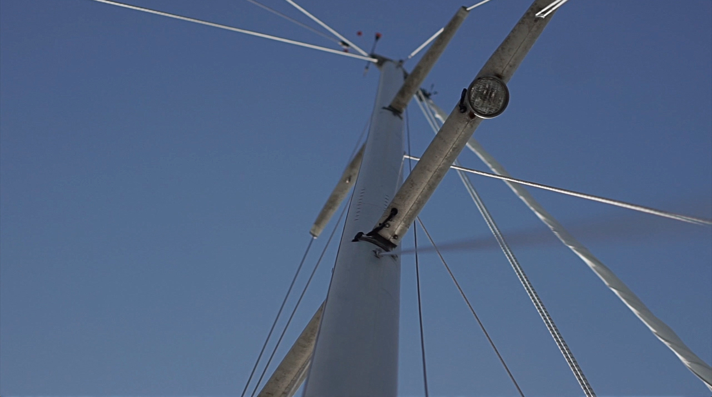Again, while in Tonga, our friend Alex came over to talk to us, and standing in his dinghy from the water, noticed a cut in our port side intermediate shroud. An intermediate shroud, is one of many wires that are holding up the mast. This one, leads above the second spreader (a spar, that deflects the shrouds) on the side of the mast. Our boat has two sets of spreaders, because we have a very tall mast - not everyone has intermediate shrouds. The cut was just near the lock (the part that squeezes, and connects the wire to the turnbuckle), a single cut in one of the strands. This was bad news. We had it fixed, temporarily, cutting the wire and adding a second turnbuckle - with Herbert's help (thank you sensei). We needed to fix this, and while in Whangarei, thought we'd replace the port side intermediate and the backstay (a wire from the mast that leads to the back of the boat) as well. We had an insulated backstay, the electrical isolation of a section of wire, but no SSB (single side band radio)onboard, and no intention of having one, so we replaced the whole thing. We were told that this could be a potential breaking point too, this made us more sure of this decision.
We removed our intermediate shrouds, securing the mast with halyards (lines used to hoist sails up) on both sides, our mast is keel-stepped though, mean that it goes through the deck and goes inside the cabin. We coiled the wires up, and carried them to C-spar at Dockland 5 by bike.

Daniel, a rigger and friend, was kind enough to deliver the new wires, since he was in the area. We found out later that Daniel was husband to Laura Dekker, funny, since S/V Guppy sat diagonally to us on the pile moorings.

The issue with replacing the intermediate shrouds though, was that the T-terminals they had were too big to fit in the backing plates of our mast. A t-terminal is a piece at the top of end of the wire, shaped like a T (as the name suggests), that fits into a backing plate that is attached in your mast with rivets (a permanent mechanical fastener). The backing plate is in a hole, in your mast, and has a little elongated slot for the T to fit into, it fits at an angle and when turned the little arms of the T keep it in place.
Daniel came over to take a look, and ended up drilling the rivets out of the starboard side backing plate to get it out, so they could see how to fit the terminals into them back in the shop. The T-terminals were shaved down slightly, and the hole in the backing plate made bigger, with much care, using a drill and bit.
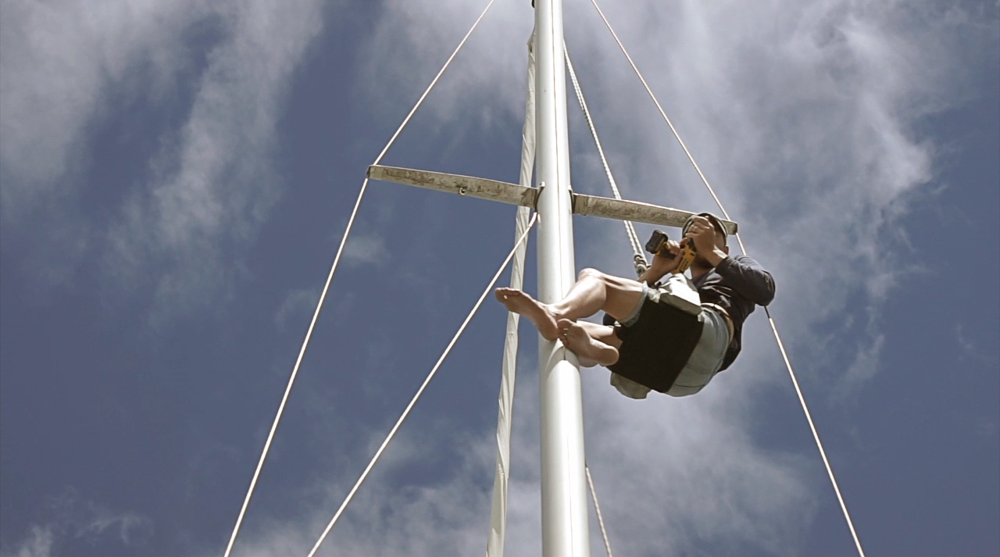The backing plate was installed again, but it took some time before we could do that. We needed an air compressor, to use a gun to get them back on there. As it turns out, our rivets are big, and doing it by hand near impossible - on a pile mooring, there was no way to power that compressor. We waited till our haul out to do it, since C-spar was at that yard, and that they could bring the compressor there to do it. This is what happened. Daniel climbed up the mast while the boat was on hardstand, this wasn't our idea, but then again, the cradles were made strong, better than how they do it in BC. It seemed safe enough, there was little chance that the boat would tip over. It's always better to go up the mast while in the water, since the boat has righting ability, and won't risk tipping.
Once the backing plate was back in, I hauled Devine up the mast (when back in the Town basin), and he widened the backing plate, same as the other one. This was tricky, because our drill has a cord. We connected the drill to a long extension, and then to the generator on deck. We were able to replace both intermediate shrouds then. We had to do this quick, cause Devine had trouble holding the weight of the drill, and the whole length of the extension aloft.
The backstay was easier to do, but was heavier to carry by bike. The new wire would be lighter, without the insulated part. Our other wires, we deemed good enough. No cuts. We'd wait until our return to BC to replace them, that, with the running rigging.
Takeaway: Re-doing your rigging at a dock is much easier, much, much easier. Having access to shore power would have been handy. I bought norseman cones online from rig-rite, had them shipped from the US for way too much money. Avoid rig-rite if you can, their service is shit and they'll charge you a ridiculously high amount to ship the part without warning you of it. Glad i bought more cones than we needed though, when comes time to replace the other cables we'll have them on hand already.
Intermediates + swaging 214
Backstay + swaging 186$
Norseman cones 100$
Total 4590$
Mainsail

Our first idea for the main, was to get the material, and to try and sow it up ourselves. We'd heard of people doing this before, sailrite sells a lot of kits to do it. We didn't want to order from the US, and thought we'd go to a local sail loft to ask if they could make the cuts for us.
We believed we could do it, and even asked for the advice of UK sails. They were glad of our interest in this, and even gave us a stack of old needles to try in our sewing machine, as well as a slab of thick sail to do tests on. Unfortunately, our thrift store machine did not prove worthy of the task. But also, this, along with all the work we'd already done, was just too much. We had much ambition, but little time and energy.
Sails can last a long, long time, so we put in the money to get it done right in the end.
We tend to get carried away in our ideas, while I would like to sow up my own sail someday, now wasn't the time to experiment. We needed something solid, something that could get us through the hard sailing we'd have to do the next year.
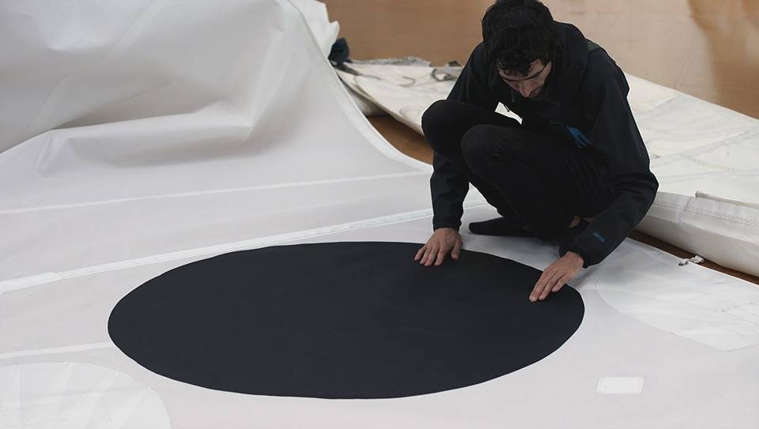We carried our old main over to UK sails, and chatted about what we wanted for our new main. We opted for a loose-footed sail (a sail that doesn't run in a track on the boom, only attached by two points), full-batten (made with pockets for long battens, that help keep the shape of the sail), 3 reefs (reinforced points of attachment, that you put lines through, and that you use to keep the sail down and tied when making the sail smaller in big winds), thick, with a black circle stuck to both sides. We don't have a staysail, a thick and small storm sail that is used instead of the mainsail in big weather, so we thought that this thicker main, with a third reef, could act as that. The people at UK sails were so damn nice to us, answering all our questions, and letting us film the process. We also had our jib (our headsail) re-stitched, we couldn't really afford to get this one replaced entirely, but it's still good and strong.
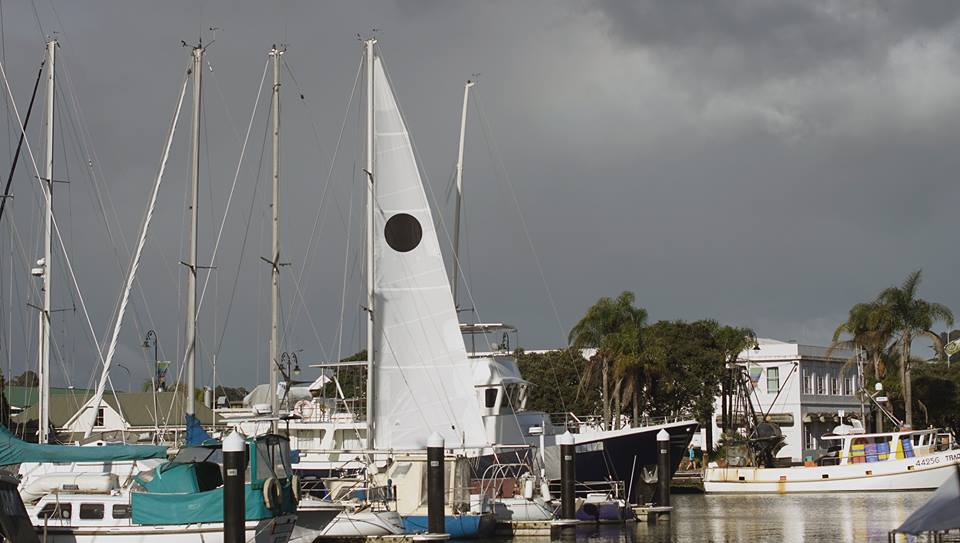Take away: DIY is great if you have time. Sailmaking is intricate work, hard to get right, especially in a small cramped space. I think we could have succeeded, but again, this wasn't the time for experimenting. Pino needs a good set of wings, it is our main means of propulsion after all. If you are interested in doing it yourself though, there are plenty of tutorials around, and ask your local sail loft for advice, if they love their work and see you have an interest in it, they'll offer help.
Mainsail 3300$
Total 7890$
Ais

If we hope to get to Japan safely, we need AIS. "AIS stands for "automatic identification system", it's an automatic tracking system used on ships and by vessel traffic services. AIS information supplements marine radar, which continues to be the primary method of collision avoidance for water transport (definition sourced from wikipedia)."
There is a lot of traffic in Japanese waters, making it necessary to be seen by other means. We have radar, but it uses more power than AIS to function, with radar we can know that something is out there, but we don't know the boat's name, size or heading. AIS provides all of this information, with it, you can call a boat by name on the radio if need be, and they, can see you and call you as well if you have a transponder (a device that transmits your boat's information).
Our first idea, was to DIY this (this is a common theme in this post isn't it?) with a Raspberri Pi Daisy hat.

This Raspberry Pi project turned out to be too big of a leap. We had little Pi experience then. We also needed more then the dAISy hat could offer, more reliability, and range. We also wanted to transmit our position, and it's why in the end we opted for a Vesper XB-8000 transponder.
I never thought we'd buy this, already then, I was scared of all the big spendings we'd been doing, but we figured it was well worth the price. The unit itself is costly, but made worse by the fact that you need to buy a splitter to connect it to the VHF antenna. A splitter removes the need for a separate VHF antenna for an AIS receiver or transponder and allows a single antenna to be shared with a VHF radio. The antenna splitter also provides signal gain, improving AIS reception and range. The unit we got, has a low-noise amplifier, it helps to get a good signal on smaller lower power devices that are transmitting out there.
We walked out of there, wide-eyed, half-regretting. We both took on some extra work to help us cover these costs, because ouch.
Installing it wasn't too tough. We routed the wires from the back rail of the boat, inside the radar post, through the cockpit locker, under the flooring, through the ceiling, and down over to the port side breaker panels. Easy? Not really. Pino has a lot of extra wiring, that leads to nothing, junk that was left hanging in the boat by previous owners and that we haven't bothered to remove because of how shitty a job it is. There's still old GPS, SSB, modem wires running through here. We set up the antenna outside, on the rail, and the unit inside the breaker panel, stuck to the back wall with the splitter. Connecting it, and setting it up, was simple - how rare.

After installing it, and spending some time at sea with it, we were happy to have it. One night we had forty knots at our backs, there were big seas, a ship lay in front of us, too close. My eyes couldn't see them in the night. We were running downwind and could not manoeuvre so well, and the other ship was a power boat, going real slow. We were surfing at 8 knots, we'd catch up in no time. I saw them on AIS, saw their name, gave them a call to warn them of our passing, we weren't going to run into them, but we'd pass awful close. They told us they were running under headsail, and that they too could not manoeuvre too well, but were happy to know we knew they were there.
That peace of mind, of them knowing we're there, and being clear on our intentions, made it worth it.
Take away: We will always opt for the DIY option first, even it a lot of times it we fail at it. We are still, happy to try though. The DAISy hat may be a good option for a lot of people, we still have it aboard, and will continue to play with it.
AIS 1200$
Splitter 400$
Grand total of 9490$
Wow. This doesn't include materials, like epoxy, paintbrushes, sealants, nails, screws, etc that we had to get to complete these projects.
That about sums up what we got done while in New Zealand, and it's the reason why we didn't travel much with the boat. There are many more things we wanted to change aboard, like changing our head to a composting head, changing to a manual windlass, removing a lot of old wiring and things we no longer use like our water heater etc. Removing the head, would mean making additional room for water, that would have been good for this trip but again, we had to prioritize.
We made a lot of mistakes, and foolishly thought we could all do it ourselves. While I prefer to do that most times, it's not always possible. We had too much on our shoulders already, we didn't need the stress. We did do a lot of it on our own, and even the things we had help with, we took part in in some way. Learning to do it all yourself is important, but we are no experts, we'll continue to learn and when we've got more time and room to experiment we'll try and do these things on our own. It's important to ask for help though, there is a lot of value in having a mentor around, not something that is common these days. Our mentors, are all the sailors we meet, and that take time, sitting with us, answering our questions, or ever coming to help us in the task we need to do.
I'll close this post, by thanking all in NZ who helped us out, for repairs, general advice - whatever. Time and knowledge is precious, we thank you: Herbert & Asma (s/y Maya), Jim & Linda (S/Y Bright moments), Pauline and Antoine (s/y Magellan), Becky Jeffries (uksails) & Daniel (c-spar),